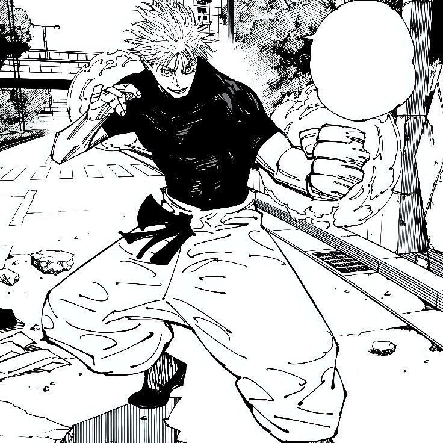

The Honored One
Gojo Satoru
Gojo Satoru is a character from the Japanese manga series "Jujutsu Kaisen". He is the strongest sorcerer in the series due to his many unique techniques.

Nah, I'd win.
Nah, he'd win.

Techniques
- Limitless: Allows Gojo to alter the space around him, affecting gravity to push or pull onjects and people
- Infinity: A form of the limitless technique, allows gojo to cover himself in an invisible barrier called "infinity". Anything that tries to pass through infinity will keep being slowed infintley, thus never being able to touch Gojo
- Red: A form of limitless as well, is gojo expanding the space around a single focal point, acting as an attack with large destructive capabilites.
- Blue: The opposite of red, sucks in the space around a focal point. Much like a miniature black hole.
- Purple: The combination of Red and Blue, as the space is sucking in on istelf as well as expanding out rapidly Purple is Gojo's most destructive attack. Obliterating anything it touches.
Sources
Below or some sources where you can learn more about Gojo and Jujutsu Kaisen
Fandom Wiki
Where to read JJK
© Jujutsu Kaisen